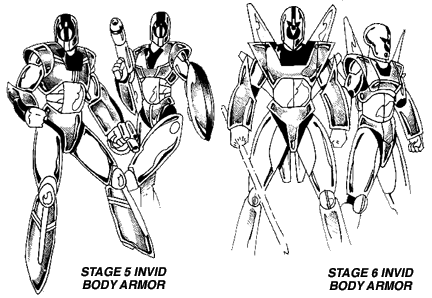

NEW INVID EQUIPMENT
CONTENTS:
INVID BODY ARMOR

Early on during the Third Invid War the stage 6 Invid began examining the mecha and tactics of REF personnel and freedom fighters that were fighting them. Inevitably the leader Invid started to emulate the resistance, building their own versions of some of the tools and equipment commonly used by the humans. One of the earliest pieces of human technology to be copied was the CVR-3 Cyclone Body Armor, which resulted in a new type of Invid Body Armor for use by stage 5 and stage 6 Invid.
Like the CVR-3 Armor, the Invid Body Armor is a durable and lightweight containment suit that covers the entire body. However, the Invid Armor is made up mostly of chitin-like ceramic alloys and plates instead of the metal and kevlar of the REF version. There are two different versions of the body armor, one for the stage 5 Invid and one for the stage 6 Invid. The stage 6 version is slightly stronger and offers better protection than the stage 5 version, but otherwise the suits are identical. There are also slightly different version for male and female Invid. Note that unlike the Invid Enforcer and Sentinel mecha, the body armors are NOT powered exoskeletons and do not increase the strength of the wearer. Like their REF counterparts, humanoid Invid pilots often wear body armor while piloting their mecha in order to have an additional level of protection from damage.
Invid Body Armors provides the following benefits:
MDC protection by location:
| Stage 5 Version | Stage 6 Version |
Helmet 40 Main Torso 50 Arms (2) 20 Legs (2) 30 |
Helmet 60 Main Torso 70 Arms (2) 40 Legs (2) 50 |
(Note: If you prefer the older rules for MDC body armor, use the MDC value of the Main Torso as the overall value for the armor)
Standard Features (Both Versions):
INVID TYPE II ENERGY PISTOL
Like the CVR-3 Body Armor, the stage 6 Invid also emulated some of the
hand weapons of the resistance fighters. Although they already had a
simple energy pistol for use by humanoid Invid, the leader Invid came up
with additional weapons for use in the field or outside of their mecha.
The Type II Pistol is a more compact version of the older Invid energy
blaster (see Invid Invasion page 77), designed to be the new standard
handgun for humanoid Invid. Most stage 5 and stage 6 Invid will have a
pistol of this type on them at all times. Like the Gallant H90, this
pistol can be converted from an SDC weapon to an MDC weapon with a
simple flick of a switch. The Energy Pistol is powered by a special
protoculture cell and is NOT compatible with energy clips.
INVID ENERGY RIFLE
A heavier weapon used by stage 4 (unarmored), stage 5, and stage 6
Invid. Like the Type II Pistol, this energy rifle can also do varying
amounts of damage. However, more power levels are offered, including a
stun version for the capture of live specimens/prisoners. The Energy
Rifle is powered by a special protoculture cell and is NOT compatible
with energy clips.
INVID PERSONAL ENERGY SHIELD
This is a smaller version of the energy shield carried by the Invid
Enforcer and Sentinel mecha. The shield is oval in shape and is 3 feet
long by 1 foot wide. The shield resembles some of the shields used by
Southern Cross troops. Like the pistol and the rifle, the Energy Shield
is powered by a special protoculture cell and is NOT compatible with
energy clips.


 |
http://www.mcs.net/~deitrich/index.html deitrich@mcs.net |
Last Updated: |